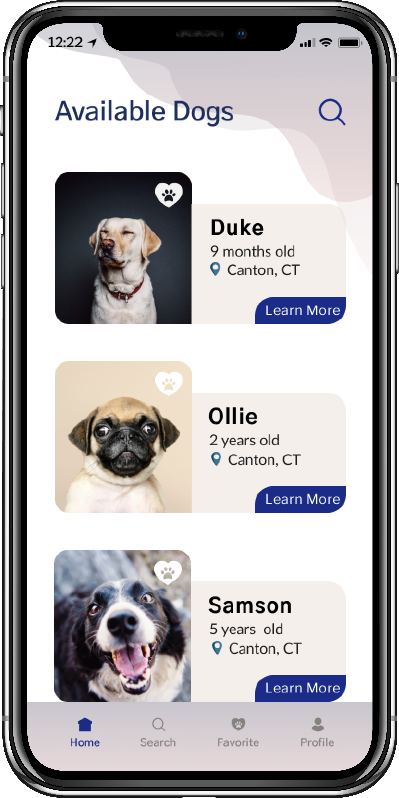
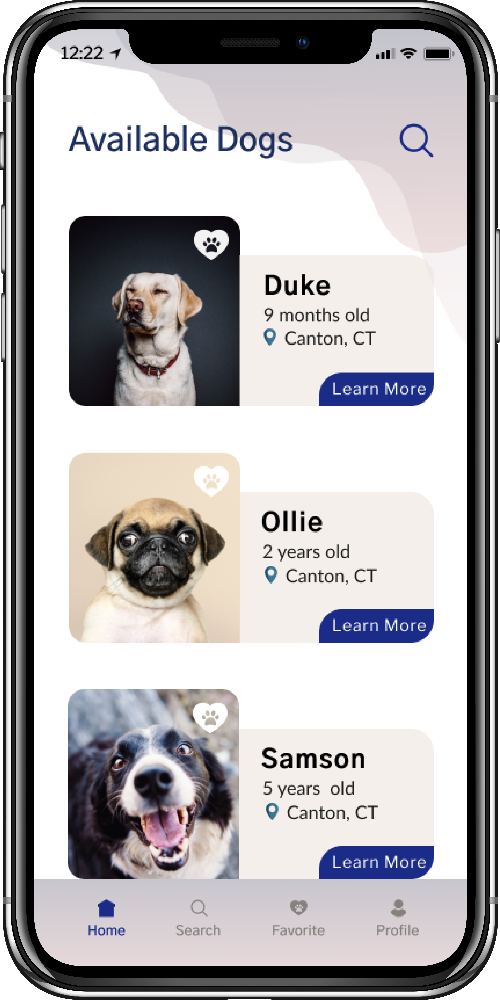
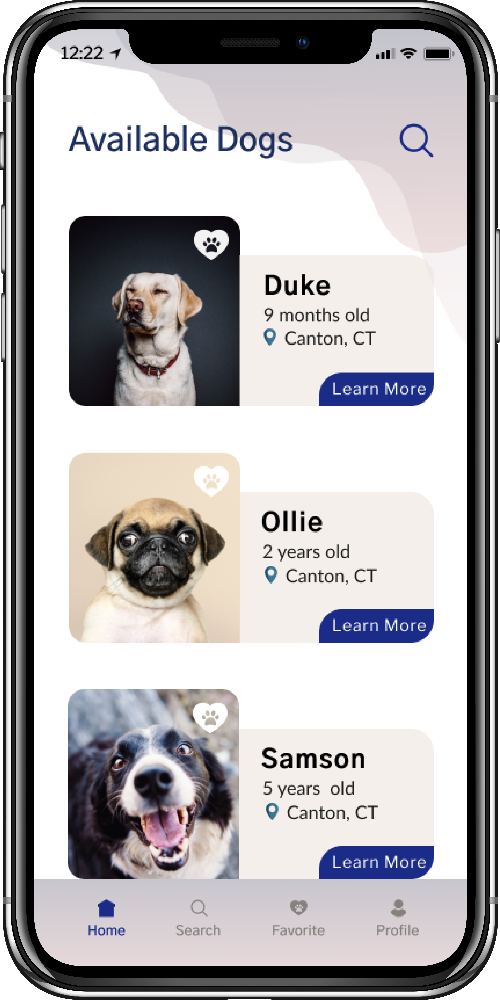
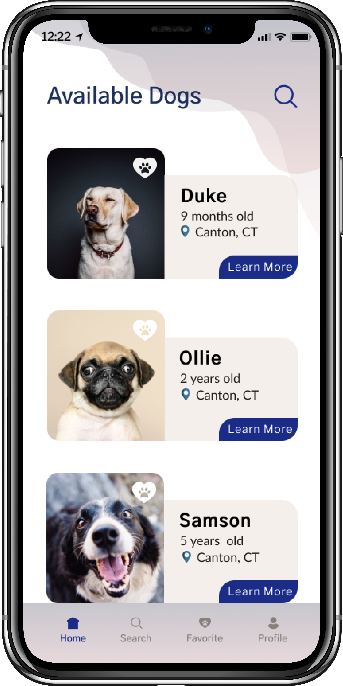
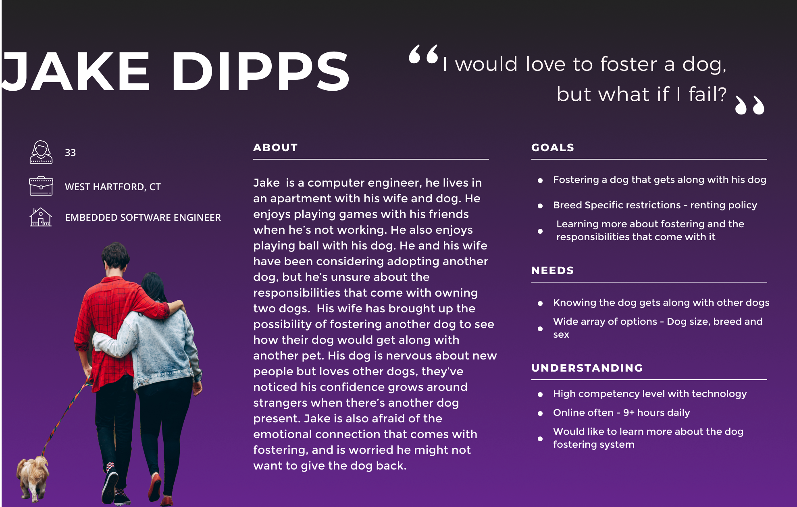
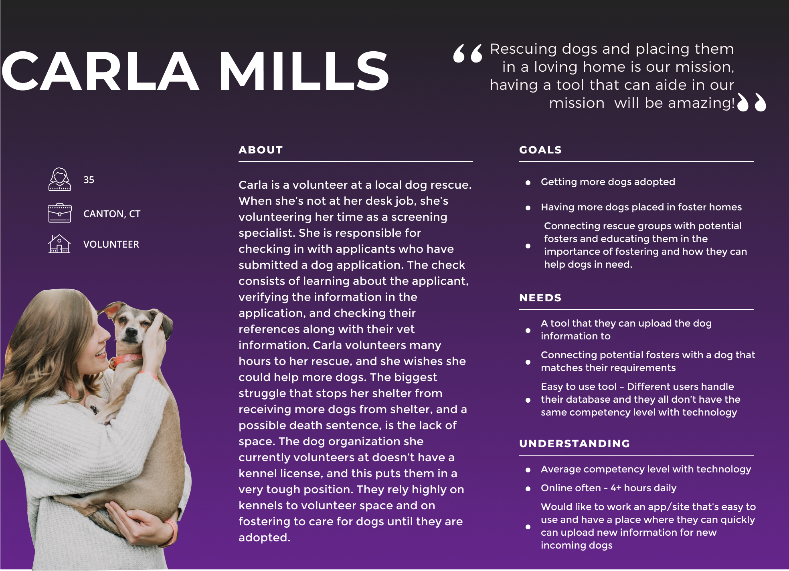
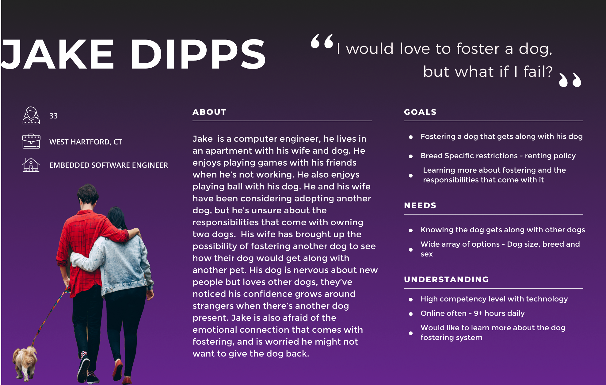
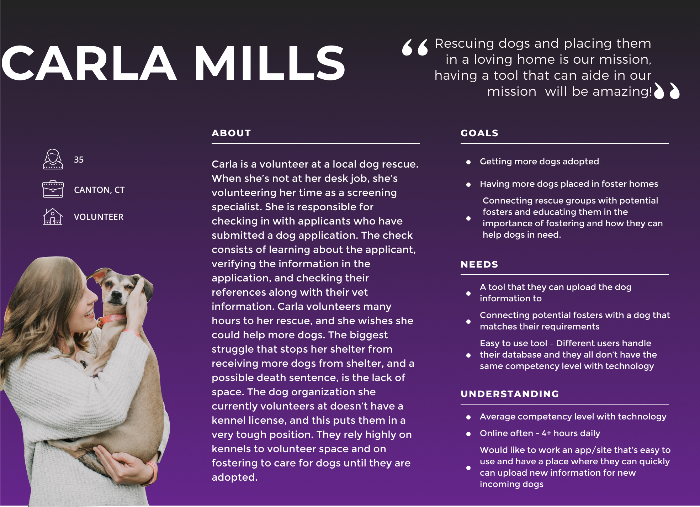

Hound Watch
 

 

UX/UI Design | Research| Branding | Prototyping
Sketch | InVision | Axure | Figma| Usability Hub
2019
There are many people who are interested in fostering a dog but there is a lack of information surrounding the fostering process, and therefore opportunities are limited. The commonly used pet finding applications are focused on adopting animals and there is not a dedicated space for fostering.
Rescue organizations rely heavily on volunteerism and assistance from the community. Fostering is one of the biggest support systems; it helps a dog adjust to a new place, provides them with a safe and loving home and it aides in
reducing overcrowding in shelters and kennels.
Hound Watch was created to connect people with dogs that are in need of a temporary home. With Hound Watch individuals can find a dog that matches their need and requirements.
.
As a UX Designer I conducted user research to learn if people were interested in fostering dogs. Based on that initial data I developed an application that showcases available dogs that are looking for foster homes. People can connect with the sponsoring rescue group and apply to foster the dog within the application.
| 88.2% | of respondents have never fostered a dog |
| 70.6% | of respondents currently own a dog |
| 53.8% | of respondents are not familiar with the process of fostering a dog |
| 82.4% | of respondents may be interested in fostering a dog |
A SWOT analysis was completed with three competitors.
Adopt a Pet | Petfinder | The Humane Society
The analysis indicated that there was an untapped market within the three competitors that provided an opportunity for us and Hound Watch. All of the competitors have no specifics or focus when it comes to fostering a pet.
| Adopt a Pet | Petfinder | The Humane Society | |
| Dependancy | High | High | Medium |
| Brandpower | High | High | Medium |
| Interface | Normal | Best | Normal |
| Affordability | Free | Free | Free |
| Platforms | High | High | Medium |
| Usability | High | High | Medium |
| Free Storage | Yes | Yes | Yes |
| Technology | Good | Best | Normal |
 



User stories consisted of three user roles:
A new user – Never own a dog
Returning user – Already owns a dog
Administrator – Rescue Volunteer
The stories were accompanied with the applicable user flows, the page it will belong to, and the priority of the story (low, medium and high). click here.
With the aid of the user stories, I focused the user flows on the high priority stories.
Wireframes were created with the guidance of the user flows. The wireframes were first created with pen and paper and then were iterated in Figma. The wireframes included the welcome page, sign up pages, login pages, dashboard, dogs profile, and the rescue group profile.
When creating the sketches keeping the users need in mind was important. Users want a place where they can easily collaborate, create content and share files/content. With that in mind, in the homepage there was a highlight on the collaboration aspects as well as testimonials and a login/sign up option. With the dashboard I wanted the user to easily be able to access, upload and view their files.
High Fidelity designs were created with the user in mind, preference testing, along with user testing were conducted on multiple phases of the design process.

The initial mockups were created with Figma, these mockups consisted of the welcome pages, login and signup page, dashboard, dog profile page, rescue profile page, and the filter page. The initial mockups were submitted to the daily design critique and received valuable feedback. Iterations were made to better assist in the usability, the icon colors, and various design changes were implemented. Alignment and spacing were also updating to create a consistent design.
A typeface was chosen that created a sense of stability and cleanliness. There were two main fonts, one that was focused on main headings, while the secondary font focused on sub-headings and the body. I relied on the same strategy for colors, there were chosen primary colors, secondary colors, and a gray palette. The brand identity encompassed a neutral tranquility with a calm boldness.

Hound Watch creates an environment where people can participate in a valuable cause: they can help provide a temporary home to an animal need. By connecting rescue organizations and possible fosters, Hound Watch is a perfect tool that can create great change and aid in the saving of many dogs lives. There were many hurdles that I had to overcome as a designer while creating Hound Watch. In the initial design phase I designed with a focus on both the user and the rescue organization. I wanted to create a two-tiered design, a user based design and an administrator based design. The administrator design would be for the rescue group. I came to realize that focusing on both the user and the rescue group in one project would be out of the scope of this project, with excessive time and manpower required. I hope to come back and further work on this aspect of the project. Creating Hound Watch emphasized the importance of user feedback as well as peer reviews. When working on a project alone, you sometimes lose focus and forget that you’re designing for various users. Stepping back and having a second pair of eyes to provide feedback is vital. Ultimately, as I continue to develop Hound Watch, I hope it can continue to reach a wide range of users that can help an animal in need.